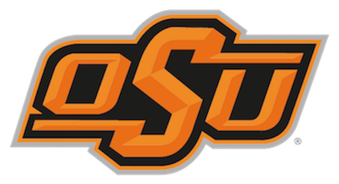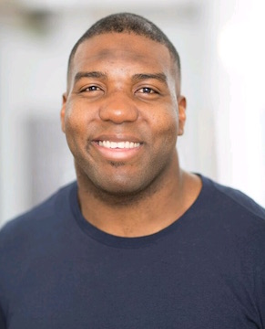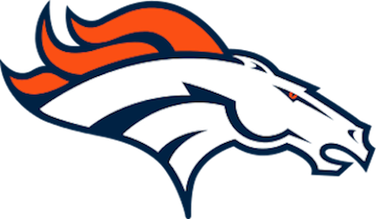
Russell Okung
Age: 28
Houston, Texas
After creating the Greater Foundation with Executive Director Andrew McGee, former Seahawk Russell Okung aims to provide underprivileged youth access to the technology community. Through systematic and institutional change, the Greater movement will break the cycle of at-risk youth and create a new class of global citizens that are built and equipped to grow through their circumstances with personal responsibility to their communities and the world.
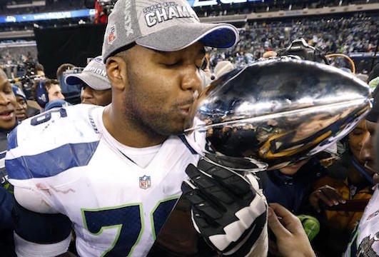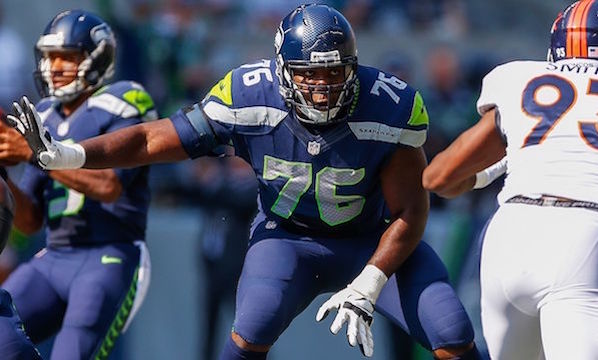
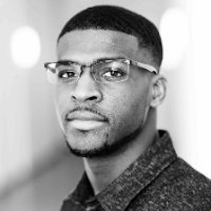
Andrew McGee
Age: 27
Magee, Mississippi
Andrew McGee is the Executive Director of the GREATER Foundation, a Non-Profit Organization co-founded by him and former teammate and former Seattle Seahawk, Russell Okung. As a former Oklahoma State University Football player, he has channeled his passion for leadership and mentorship into an organization that leverages the power of the sport to initiate change in society, and empower students to “be greater” in their own way.
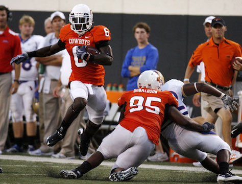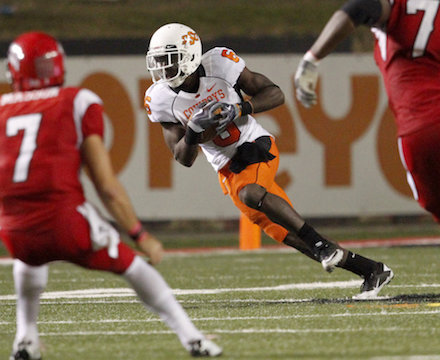
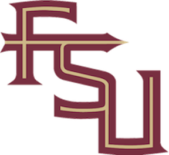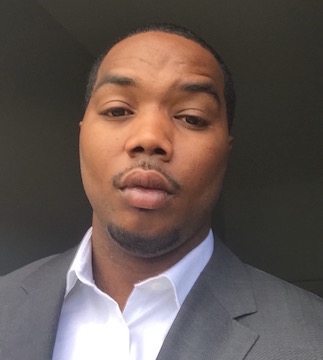
Taiwan Easterling
Age: 27
Magee, Mississippi
Growing up in Magee, Mississippi allotted numerous sport opportunities for Taiwan Easterling. After playing football and baseball on a both a collegiate and professional level, Taiwan is in the midst of balancing his work in construction management, and pursuing a Master’s degree in Project management with a minor in entrepreneurship and emphasis of data analytics. During his fellowship with the Greater Foundation, Taiwan hopes to develop new skills to pass forward others and give back to his community.
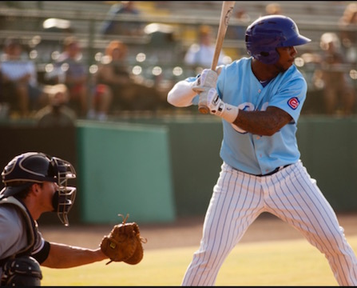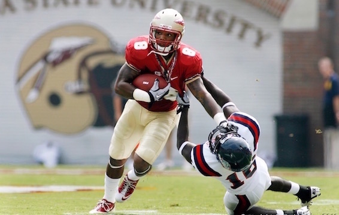
Britney Presley
Age: 23
Tulsa, Oklahoma
As a fierce competitor in track and field, student-athlete Britney Pressley balances sports life with a passion for business. After being selected for the Greater Fellowship program, Britney hopes to utilize the tools and skill sets learned from the program, and apply them to her current pursuit of receiving her master’s degree in Social/Corporate Entrepreneurship. “As a Fellow of the Greater Foundation, I want to inspire people around me with the lessons and skills I develop through my tenure, in addition to giving back to the community”.
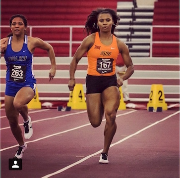
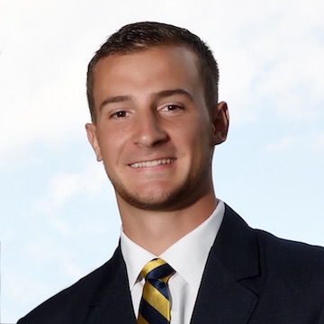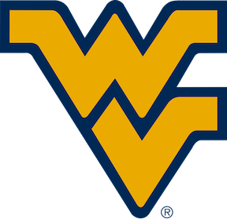
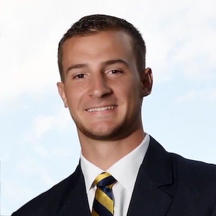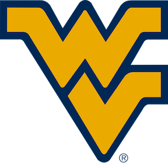
Michael Molinari
Age: 24
Parkersburg, West Virginia
Michael Molinari balances the demand of being a full-time student with the responsibility of being a student athlete at West Virginia University. While pursuing his MBA at WVU, Michael’s involvement with the Greater Foundation provides opportunities to give back to communities, and build a foundation of skill sets needed for his pursuit of a career in business. After learning about the Fellowship program with the Greater Foundation, Michael states that “he believes in the mission of Greater and what it stands for, which inspires me to serve and give back to others around me”.
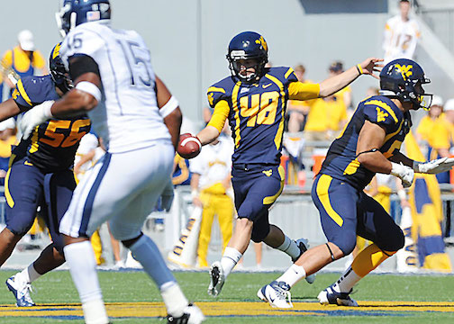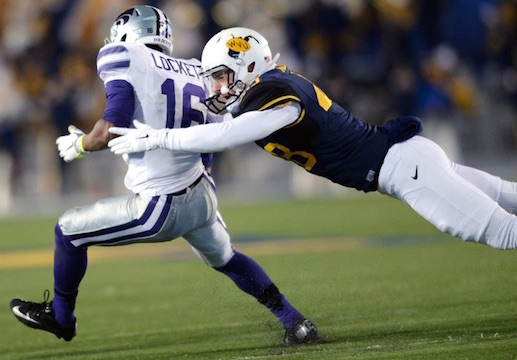